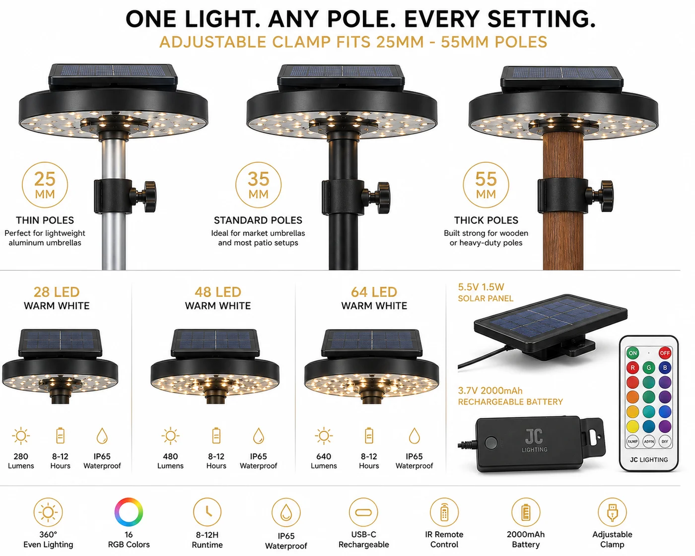

太阳能伞灯
把任意遮阳伞变成夜间氛围的抱夹式灯——28/48/64 LED,暖白加 RGB,IR 遥控,抱夹适配 25–55mm 伞杆。

为户外餐饮市场量身打造的配件:它抱夹在遮阳伞伞骨下方,无需电线即可照亮餐桌。暖白满足日常用餐;RGB 让聚会变得节庆——由 IR 遥控切换。抱夹适配常见的 25–55mm 杆径,因此与市面上多数庭院伞通用。
规格参数
| LED | 28 / 48 / 64 |
|---|---|
| 颜色 | 暖白 + RGB |
| 抱夹 | 适配 25–55mm 杆 |
| 光伏板 | 5.5V 1.5W |
| 电池 | 3.7V 2000mAh |
| 续航时间 | 暖白 8 小时 / RGB 6 小时 |
| 控制 | IR 遥控 |
| IP 防护等级 | IP44 |
| 认证 | CE + RoHS |
为什么选它
通用抱夹。适配 25–55mm 杆——与市面上多数庭院伞通用。
两种氛围。暖白用餐、RGB 办活动——一款产品,受众广。
遥控操作。IR 遥控在货架上增添便利与价值感。
已认证、支持 OEM。每份报价附 CE + RoHS;可定制包装与品牌。
为这些市场而建西班牙、澳大利亚、拉美和中东的户外餐饮与酒店零售——庭院季的高搭配率配件。